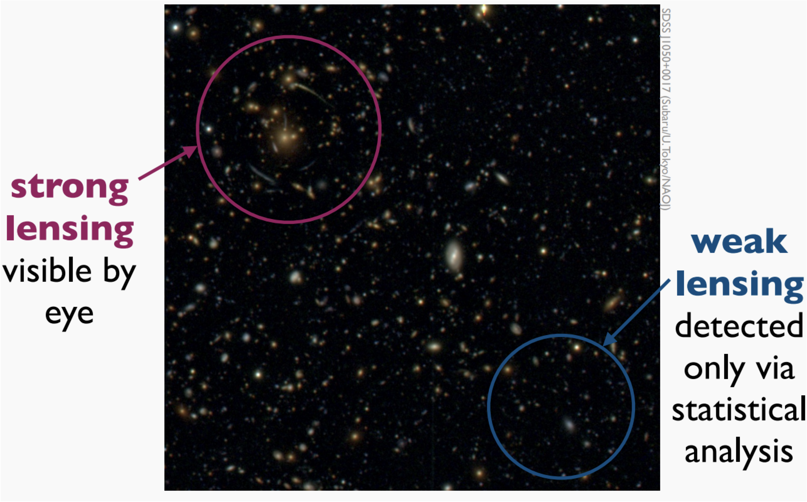
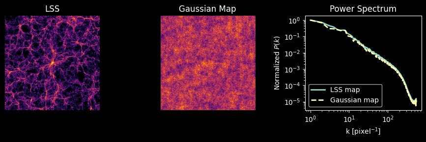
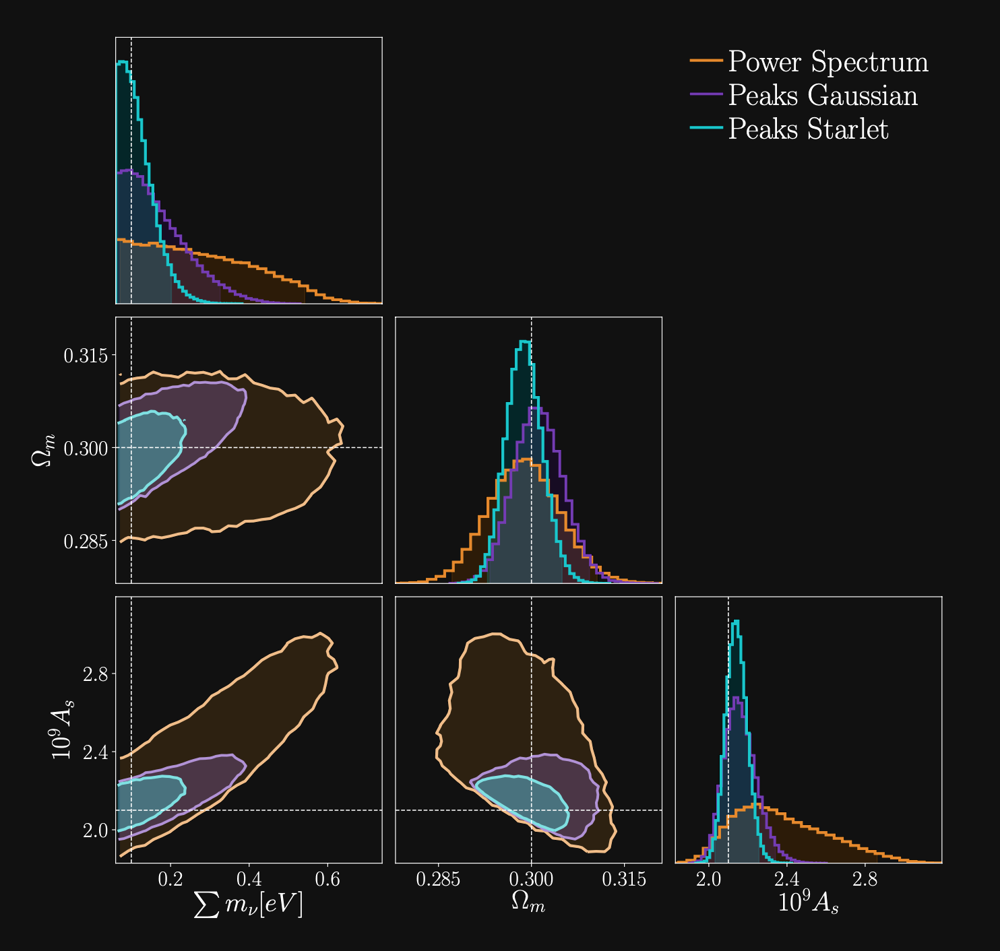
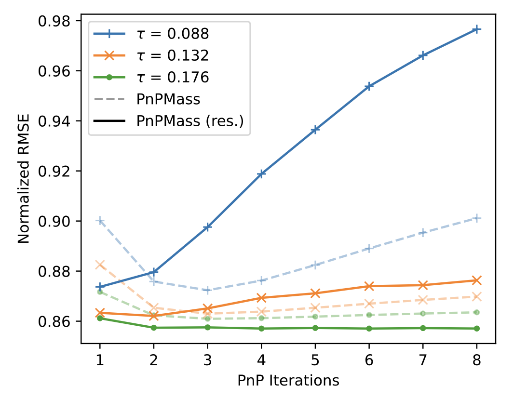
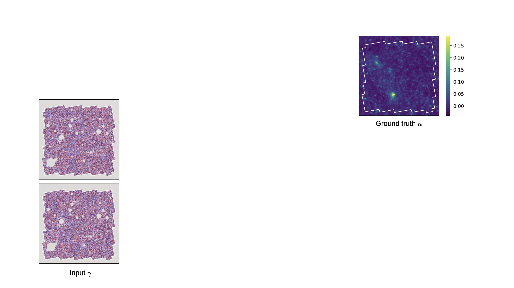
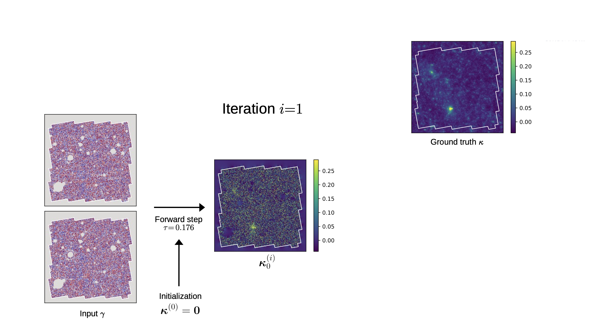
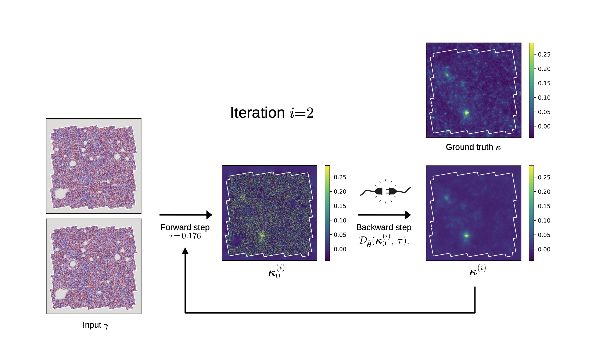
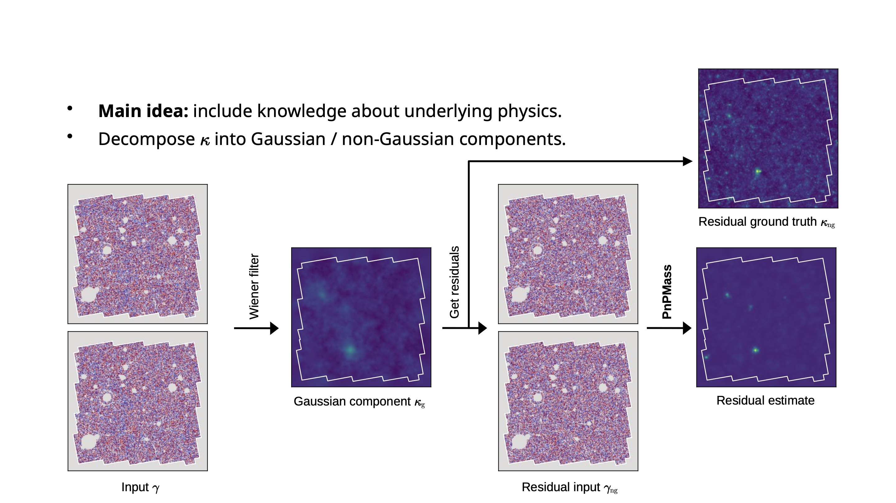
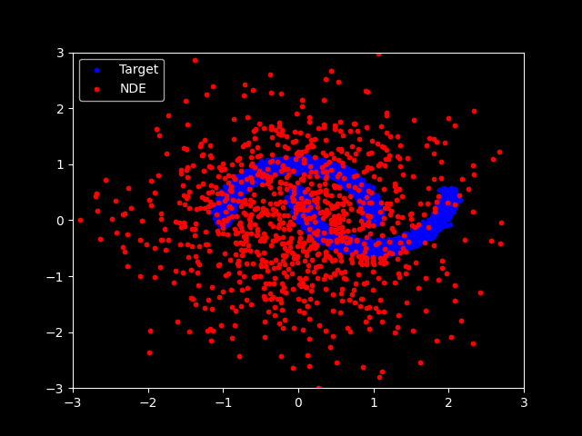

Reconstructing the Non-Gaussian Universe: Mass Mapping, Higher-Order Statistics, and SBI in Weak Lensing
April 16th, 2026
Andreas Tersenov


Slides are available at andreastersenov.github.io/talks/LAM_2026/
Le problème en question
- Weak lensing inference with higher-order statistics (HOS) often relies on mass maps.
- Producing these maps is an ill-posed inverse problem — there is no unique solution.
- Current surveys use simplistic algorithms because they are computationally efficient.
This raises an important question:
Does the choice of mass mapping algorithm affect the inferred cosmological parameters?
Or does it not matter, as long as the same operator is applied to both data and simulations?
How to test this properly?
We need to create a pipeline that can:

$\,$Introduction - Weak Lensing$\,$
- WL = Observational technique in cosmology for studying the matter distribution in the universe
- Principle: deflection of light from distant galaxies by gravitational fields → causes image distortion
- Weak → subtle & coherent distortions of background galaxy shapes

- WL provides a direct measurement of the gravitational distortion.
- WL enables us to probe the cosmic structure, investigate the nature of dark matter, and constrain cosmological parameters.
© ESA / Euclid Consortium
Shear & Convergence

Convergence $\kappa$
$$ \kappa = \frac{1}{2} (\partial_1 \partial_1 + \partial_2 \partial_2) \psi =
\frac12
\nabla^2 \psi $$
⟶ difficult to measure
Shear $\gamma$
$$ \gamma_1 = \frac{1}{2} (\partial_1 \partial_1 - \partial_2 \partial_2) \psi,
\,\,
\gamma_2 = \partial_1 \partial_2 \psi $$
⟶ can be measured by statistical analysis of galaxy shapes
Shear estimation

Galaxy shapes as estimators for gravitational shear
$$ e = \gamma + e_i \qquad \mbox{ with } \qquad e_i \sim \mathcal{N}(0, I)$$
- We are trying the measure the ellipticity $e$ of galaxies as an estimator for the gravitational shear $\gamma$
Convergence \( \kappa \)
As a Line-of-sight (LOS) projection of the 3D overdensity:
\[ \kappa(\boldsymbol{\theta}) = \int_{0}^{\chi_s}\! d\chi\; W(\chi)\,\delta(\chi\,\boldsymbol{\theta},\chi),\qquad W(\chi)=\frac{3H_0^2\Omega_m}{2c^2}\,\frac{\chi(\chi_s-\chi)}{a(\chi)\,\chi_s}. \]
- Encodes both geometry (via \( \chi, a(\chi) \)) and growth (via \( \delta \)).

Simulated \( \kappa(\boldsymbol{\theta}) \) map.
Relation between $\kappa$ and $\gamma$
- From convergence to shear: $\,\, \gamma_i = \hat{P}_i \kappa$
- From shear to convergence: $\,\, \kappa = \hat{P}_1 \gamma_1 + \hat{P}_2 \gamma_2$
- In theory optimal.
- In practice, $\{ \textrm{noise, masks, irregular sampling of galaxies, mass-sheet degeneracy} \} \longrightarrow$ ill-posed inverse problem
The Weak Lensing Mass-Mapping as an Inverse Problem
Shear $\gamma$


Convergence $\kappa$


$$\gamma_1 = \frac{1}{2} (\partial_1^2 - \partial_2^2) \ \Psi \quad;\quad \gamma_2 = \partial_1
\partial_2 \ \Psi \quad;\quad \kappa = \frac{1}{2} (\partial_1^2 + \partial_2^2) \ \Psi$$
$$\boxed{\gamma = \mathbf{P} \kappa}$$
Kaiser-Squires inversion
- Mass mapping problem recover an estimate of the convergence from measurements of the shear $$\kappa = \dfrac12 \Delta \psi, \,\, \gamma_1 = \dfrac12 \left( \partial_1^2 \psi - \partial_2^2 \psi \right), \,\, \gamma_2 = \partial_1 \partial_2 \psi $$ $$\Rightarrow \kappa = \Delta^{-1} \left[ \left( \partial_1^2 - \partial_2^2 \right) \gamma_1 + 2\partial_1 \partial_2 \gamma_2 \right] $$
Kaiser-Squires estimator:
$$ \tilde{\kappa}_E+i \tilde{\kappa}_B=\left(\frac{k_1^2-k_2^2}{k^2}+i \frac{2 k_1
k_2}{k^2}\right)\left(\tilde{\gamma}_1+i
\tilde{\gamma}_2\right)=\mathbf{P}\left(\tilde{\gamma}_1+i \tilde{\gamma}_2\right)
$$
→ $\tilde{\kappa}_E$ and $\tilde{\kappa}_B$ are complex representations of convergence E and B modes.
From galaxies to mass maps
Mass mapping as an inverse problem
- Binned data: $\gamma = F^* P F \, \kappa$
- Unbinned data: $\gamma = T^* P F \, \kappa$
$T =$ Non Equispaced Disctrete Fourier Transform (NDFT)
$$ \tilde{\boldsymbol{\kappa}}=\min _{\boldsymbol{\kappa}}\|\boldsymbol{\gamma}-\mathbf{A}
\boldsymbol{\kappa}\|_{\boldsymbol{\Sigma}_n}^2 $$
with $\mathbf{A} = \boldsymbol{F} \mathbf{P} \boldsymbol{F}^* $
There is no unique and stable solution, it is an ill-posed problem.
Kaiser-Squires inversion
Advantages:
- Simple linear operator
- Very easy to implement in Fourier space
- Optimal, in theory
Practical difficulties:
- Shear measurements are discrete, noisy, and irregularly sampled
- We actually measure the reduced shear: $g = \gamma/(1-\kappa)$
- Masks and integration over a subset of $\mathbb{R}^2$ lead to border errors ⇒ missing data problem
- Convergence is recoverable up to a constant ⇒ mass-sheet degeneracy problem
Inpainting
- Inpainting methods → techniques to fill in missing data in images by estimating the missing values from the known ones.
- A way to deal with the missing data problem in mass mapping and with the border effects in the convergence field.
- Implement a sparse inpainting based on the DCT (assume that the full $\kappa$-field is sparse in the DCT dictionary → apply an iterative thresholding algorithm to recover the missing data).
Bayesian reconstruction
- Mass mapping problem → statistical inference problem
- Goal: infer most probable value of $\kappa$-field given observed shear data
- Maximum A Posteriori solution: $\hat{x} = \arg \max_x \, \log p(y|x) + \log p(x)$
-
In practice: this is usually solved iteratively by
alternating two steps:
- Move toward better data fit (gradient of likelihood)
- Enforce the prior using a proximal operator
Proximal operator
- Acts as a "smart denoiser" by finding the closest solution that satisfies the prior.
- Example: sparsity prior → proximal operator performs thresholding to enforce sparsity in the solution.
Wiener filter
- Assumes prior on $\kappa$ → Gaussian random field $p_{\rm Gauss}(\kappa) = \frac{1}{\sqrt{\det 2\pi \mathbf{S}}} \exp{\left( - \frac12 \tilde{\kappa}^{\dagger} \mathbf{S}^{-1} \tilde{\kappa} \right)}$
- Likelihood (assuming uncorrelated, Gaussian noise) → also Gaussian $p(\mathbf{\gamma} | \kappa) = \frac{1}{\sqrt{2\pi\det \mathbf{N}}} \exp{\left[ -\frac12 (\mathbf{\gamma - \mathbf{A} \mathbf{\kappa}})^{\dagger} \mathbf{N}^{-1} ( \gamma - \mathbf{A} \mathbf{\kappa} ) \right]}$
- The Gaussian prior encodes the assumption that the fluctuations in the $\kappa$-field are well described by a Gaussian random field, with power spectrum given by the cosmological model
Convergence power spectrum
$$ \langle \tilde{\kappa}(\boldsymbol{k}) \tilde{\kappa}^*(\boldsymbol{k}') \rangle =
(2\pi)^2
\delta_D(\boldsymbol{k} - \boldsymbol{k}') P_{\kappa}(k) $$
Stat. measure of the spatial distribution of the convergence field → quantifies the
amplitude of the fluctuations in κ as function of their spatial scale
Wiener filter
Wiener solution of the inverse problem
$$\hat{\kappa}_{\text {wiener }}=\arg \min _\kappa\left\|\Sigma^{-1 /
2}\left(\gamma-\mathbf{F}^* \mathbf{P F} \kappa\right)\right\|_2^2+\log p_{\text {Gaussian
}}(\kappa)$$
- This solution corresponds to the maximum a posteriori (MAP) solution under the assumption of a Gaussian prior on $\kappa$, and it matches the mean of the Gaussian posterior.
Wiener reconstruction
$$\hat{\kappa}_{\text {wiener }}=\mathbf{S} \mathbf{P}^{\dagger}
\left[\mathbf{P} \mathbf{S} \mathbf{P}^{\dagger} + \mathbf{N} \right]^{-1} \tilde{\gamma}$$
Sparse recovery
- Decomposes the signal into another domain (dictionary), where it is sparse
- Implement the wavelet transform → decomposes the signal into wavelet functions (waveforms of limited duration with an average value of zero)
- Use starlet wavelets → represent well structures resembling the $\kappa$ of a DM halo (positive & isotropic)
- The application of sparsity prior enforces a cosmological model where the matter field is a combination of spherically symmetric DM halos
MCALens
- Models $\kappa$-field as a sum of a Gaussian and non-Gaussian component $$\boxed{\kappa = \underbrace{\kappa_{\rm NG}}_{\text{Standard Wiener filter approach}} + \underbrace{\kappa_\rm G}_{\text{Modified wavelet approach}}}$$ $$\min _{\kappa_G, \kappa_{N G}}\left\|\gamma-\mathbf{A}\left(\kappa_G+\kappa_{N G}\right)\right\|_{\Sigma_n}^2+C_{\mathrm{G}}\left(\kappa_G\right)+C_{\mathrm{NG}}\left(\kappa_{N G}\right) $$
- MCA (morphological Component Analysis) performs an alternating
minimization
scheme:
- Estimate $\mathbf{\kappa}_{\mathrm{G}}$ assuming $\mathbf{\kappa}_{\mathrm{NG}}$ is known: $$\min _{\kappa_G}\left\|\left(\gamma-\mathbf{A}\kappa_{N G}\right) -\mathbf{A}\kappa_{G} \right\|_{\Sigma_n}^2+C_{\mathrm{G}}\left(\kappa_G\right)$$
- Estimate $\mathbf{\kappa}_{\mathrm{NG}}$ assuming $\mathbf{\kappa}_{\mathrm{G}}$ is known: $$\min _{\kappa_{NG}}\left\|\left(\gamma-\mathbf{A}\kappa_{G}\right) -\mathbf{A}\kappa_{NG} \right\|_{\Sigma_n}^2+C_{\mathrm{NG}}\left(\kappa_{NG}\right)$$
Overview of mass mapping methods
- Wiener filter: Prior on $\kappa$ → Gaussian random field, Likelihood → Gaussian, Solution → corresponds to MAP for gaussian $\kappa$
- Sparse recovery: Prior on $\kappa$ → sparse in wavelet basis, Enforces model where matter field is a combination of DM halos
- MCALens: Models $\kappa$-field as sum of a Gaussian and a non-Gaussian component, Uses Morphological Component Analysis
- Deep Learning Methods:
- DeepMass: CNN with a U-Net-based architecture, prior from simulations
- DeepPosterior: Probabilistic mass mapping with deep generative models, Prior from 2pt statistics modelling at large scales & Deep Learning on simulations for small scales, Sampling with Annealed HMC
Part 1: Does the choice of mass-mapping method matter for cosmology?
A. Tersenov, L. Baumont, J.L. Starck, M. Kilbinger, arXiv:2501.06961
Mass mapping methods:
\[
\begin{array}{ll}
\hline \hline
\text{Method} & \text{RMSE} \downarrow \\
\hline
\text{KS } & 1.1 \times 10^{-2} \\
\text{iKS } & 1.1 \times 10^{-2} \\
\text{MCALens} & 9.8 \times 10^{-3} \\
\hline
\end{array}
\]
Inference pipeline
Observed data
\( \mathbf{d}_{\mathrm{obs}} \)
\( \mathbf{d}_{\mathrm{obs}} \)
↓
Simulations / Theory
\( \mathbf{d}_{\mathrm{pred}}(\boldsymbol{\theta}) \)
\( \mathbf{d}_{\mathrm{pred}}(\boldsymbol{\theta}) \)
↓
Summary statistic
\( s(\cdot) \)
↓
Likelihood
\( p\!\left(s_{\mathrm{obs}}\mid\boldsymbol{\theta}\right) \)
\[ \mathrm{L}(\boldsymbol{\theta}) \propto \exp\!\Big[-\tfrac{1}{2}\,\Delta s^{\!\top}\,\mathbf{C}^{-1}\,\Delta s\Big], \quad \Delta s \!=\! s_{\mathrm{obs}}-s_{\mathrm{theory}}(\boldsymbol{\theta}) \]
\( p\!\left(s_{\mathrm{obs}}\mid\boldsymbol{\theta}\right) \)
\[ \mathrm{L}(\boldsymbol{\theta}) \propto \exp\!\Big[-\tfrac{1}{2}\,\Delta s^{\!\top}\,\mathbf{C}^{-1}\,\Delta s\Big], \quad \Delta s \!=\! s_{\mathrm{obs}}-s_{\mathrm{theory}}(\boldsymbol{\theta}) \]
MCMC
↓
Inference
\( p\!\left(\boldsymbol{\theta}\mid s_{\mathrm{obs}}\right) \)
\( p\!\left(\boldsymbol{\theta}\mid s_{\mathrm{obs}}\right) \)
Traditional Approach: The 2-Point Route

KiDS-1000 cosmic shear constraints using 2-point functions only
(Asgari et al. 2022)
Concept
- Measure galaxy ellipticities \( \epsilon \) .
- Compute the 2-pt functions.
- Run MCMC with an analytic likelihood to recover posteriors:
\[ p(\theta \mid x)\;\propto\; \underbrace{p(x \mid \theta)}_{\text{likelihood}}\, \underbrace{p(\theta)}_{\text{prior}} \]
…but is this sufficient?
Traditional Approach: The 2-Point Route

Traditional Approach: The 2-Point Route

- Efficient, but lose non-Gaussian info.
- Non-Gaussian structure lives in higher orders.
- To access it → go beyond 2-pt: Higher-Order Statistics (HOS) (bispectrum, peak counts, Minkowski Functionals etc).
Indeed, HOS can tighten constraints significantly

Peak funtions
- The peak function is the number of peaks in a map as a function of the SNR $\nu$
Higher Order Statistics: Peak Counts
- Peaks: local maxima of the SNR field $\nu = \dfrac{\left(\mathcal{W} \ast \kappa \right)(\theta_{\rm ker})}{\sigma_n^{\rm filt}}$
- Peaks trace regions where the value of $\kappa$ is high → they are associated to massive structures
Wavelet peaks
- We consider a multi-scale analysis compared to a single-scale analysis
- Apply a starlet transform → allows us to represent an image $I$ as a sum of wavelet coefficient images and a coarse resolution image
- Allows for the simultaneous processing of data at different scales → efficiency
- Each wavelet band covers a different frequency range, which leads to an almost diagonal peak count covariance matrix
Wavelet peak funtions
Starlet $\ell_1$-norm
- New higher order summary statistic for weak lensing observables
- Provides a fast multi-scale calculation of the full void and peak distribution
- $\ell_1$-norm = sum of absolute values of the starlet decomposition coefficients of a weak lensing map
$$ \boxed{ \ell_1^{j,i} = \sum_{u=1}^{\textrm{\# coef}(\mathcal{S}_{i,j})} \left|
\mathcal{S}_{j,i}
[u]
\right| = \| \mathcal{S}_{j,i} \|_1} \, , \,\, \mathcal{S}_{j,i} = \{ w_{j,k}/B_i w_{j,k}
B_{i+1}
\}$$
- Information encoded in all pixels
- Automatically includes peaks and voids
- Multi-scale approach
- Avoids the problem of defining peaks and voids
Inference with HOS
- Use $\texttt{cosmoSLICS}$ simulations: suite designed for the analysis of WL data beyond the standard 2pt cosmic shear
- $\texttt{cosmoSLICS}$ cover a wide parameter space in $\left[ \Omega_m, \sigma_8, w_0, h \right]$.
- For Bayesian inference → use a Gaussian likelihood for a cosmology independent covariance, and a flat prior.
- To have a prediction of each HOS given a new set of parameters→ employ an interpolation with Gaussian Process Regressor (GPR)
Noise & Covariance
- We consider Gaussian, but non-white noise → the noise depends on the number of galaxies in each pixel $$\sigma_n = \dfrac{\sigma_{\epsilon}}{\sqrt{2 n_{\rm gal} A_{\rm pix}}}$$
- We incorporate masks
- Calculate covariance: $$ \boxed{C_{ij} = \sum_{r=1}^N \dfrac{\left( x_i^r - \mu_i \right) \left( x_j^r - \mu_j \right)}{N-1}} \, , \,\,\,\mu_i = \dfrac{1}{N} \sum_r x_i^r $$
From data to contours
- $\mu$: expected theoretical prediction, $d$: data array (mean over realizations of a HOS), $C$: covariance matrix
So does the choice of the mass mapping algorithm matter for the final constraints?
Inference results
Mono-scale peak counts

Wavelet multi-scale peak counts

Wavelet multi-scale peak counts
\[
\begin{array}{lcccc}
\hline \hline
\text{FoM} & \text{KS} & \text{iKS} & \text{MCALens} \\
\hline \hline
\left(\Omega_m, h\right) & 670 & 702 & 2159 \\
\left(\Omega_m, w_0\right) & 247 & 244 & 1051 \\
\left(\Omega_m, \sigma_8\right) & 2414 & 2517 & 9039 \\
\left(h, w_0\right) & 82 & 80 & 259 \\
\left(h, \sigma_8\right) & 411 & 433 & 1335 \\
\left(w_0, \sigma_8\right) & 131 & 129 & 577 \\
\hline
\left(\Omega_m, h, w_0, \sigma_8\right) & 758 & 755 & 1947 \\
\hline
\end{array}
\]
Where does this improvement come from?
Summary statistics
Part 2
A plug-and-play approach with fast uncertainty quantification for weak lensing mass mapping
H. Leterme, A. Tersenov, J. Fadili, and J.-L. Starck
arXiv:2603.22006
Plug-and-Play Mass Mapping
Main idea:
- Use PnP framework: replace prox by an on-the-shelf deep denoiser trained on simulations $$ \kappa^{n+1} = \mathrm{prox}_{\tau g} \left( \kappa^n - \tau \nabla f(\kappa^n) \right) $$ $$ \kappa^{n+1} = F_{\Theta} \left( \kappa^n - \tau \mathbf{B} \left( \mathbf{A} \kappa^n - \gamma \right) \right) $$ $$ \kappa^{n+1} = \mathrm{Denoiser} \left( \kappa^n + \mathrm{Data \, residual} \right) $$
- Series converges towards a fixed point $\hat{\kappa}$
- If we choose $\mathbf{B} = \mathbf{A}^T \Sigma^{-1}$ → training phase independent of the noise covariance matrix

Instead of explicitly writing down a prior, we learn what a "likely" $\kappa$ looks like from simulations and enforce it through denoising.
Implementation
Training
- Denoiser models implemented: DRUNet & SUNet
- Trained on κTNG and cosmoSLICS simulations, using pairs of $(\kappa_{\rm true}, \gamma_{\rm obs})$ as training data


PnPMass step by step






PnPMass on residuals




Performance


Work in progress: extending to tomographic mass mapping, and full 3D mass reconstruction.
Conclusions
- Investigated how different mass mapping algorithms affect cosmological inference using HOS from WL data.
- Constructed new mass mapping algorithm based on the PnP formalism.
Results
- With a state-of-the-art mass-mapping method (MCALens) we managed to get $\sim 157\%$ improvement in FoM over KS.
- Increase in constraining power comes from the more accurate recovery of the smaller scales.
- Wavelet Peak Counts: Provide tighter constraints than single-scale peak counts.
- PnP Mass Mapping:
- Provides a fast, flexible, and accurate mass mapping algorithm that can be used with any denoiser.
- Provides fast and reliable uncertainties using moment networks and conformal quantile regression.
Takeaway
- Mass-mapping Matters: Choosing an advanced mass mapping method significantly enhances constraints on cosmological parameters from HOS.
Part 3
Mitigating Baryonic Effects in Weak Lensing:
An SBI Analysis
A. Tersenov, S. Guerrini, M. Kilbinger, J.-L. Starck
The Stage IV Challenge: Statistics vs Systematics
The Paradigm Shift
Stage IV surveys (Euclid, Rubin, Roman) are no longer statistics-limited.
The primary bottleneck is now systematic uncertainty (model
misspecification problem).
The Systematic at Hand
Baryonic feedback (AGN, supernovae) suppresses matter density
on
small scales,
mimicking cosmological signal and biasing parameter
inference.
Its impact on summary statistics needs to be a
precisely quantified.
Illustris simulation: baryonic feedback
reshaping the cosmic web
Core Questions
- How does unmodeled baryonic feedback bias our non-Gaussian statistics?
- After safe scale cuts, do HOS still outperform the power spectrum?
Forward Modeling with cosmoGRID V1
Simulation Suite
- Flat wCDM parameter space sampled via a 6D Sobol sequence
- Full-sky convergence maps at HEALPix $N_{\rm side} = 512$
Key Feature: Paired Maps
- Dark Matter Only (DMO) maps — no baryons → unbiased reference
- Baryonified maps — BCM applied at map level → realistic contamination
Approach
- Treat the full pipeline as a stochastic simulator → no analytic likelihood needed
Parameter
space
$\Omega_m$, $\sigma_8$, $w_0$, $h$, $\Omega_b$, $n_s$
6D Sobol Sampling
Summary Statistics
Power Spectrum $C_\ell$
- Angular power spectrum up to $\ell_{\rm max} = 1024$
- Baseline 2-point statistic
Starlet Peak Counts
- Decompose $\kappa$-maps into multiscale wavelet bands via the starlet transform
- Count local maxima as a function of SNR in each band
Starlet $\ell_1$-norm
- $\ell_1^j = \sum_u |\mathcal{S}_j[u]|$ — sum of absolute wavelet coefficients per scale
- Encodes all pixels; captures halos and voids without defining discrete features
SBI with Neural Density Estimation
Why SBI?
- We can run a simulator, but do not have a tractable likelihood $p(x\mid\theta)$.
- Goal: learn the posterior directly from simulated pairs $(\theta, x)$.
- Neural density estimators approximate $q_\phi(\theta\mid x)$ and enable fast amortized inference.
Normalizing Flows (NPE)
$$ z \sim \mathcal{N}(0,I),\qquad \theta = f_\phi(z; x),\qquad
q_\phi(\theta\mid x) = p(z)\left|\det\frac{\partial f_\phi^{-1}}{\partial \theta}\right|
$$
MAF stacks simple invertible transforms to model complex posteriors.

An example of Neural Density Estimation using RealNVP (c) S. GuerriniSimulation-Based Inference Pipeline

Mitigation: Scale Cuts
- Goal: bring tension below 0.3$\sigma$
- $C_\ell$: requires aggressive cut at $\ell \lesssim 400$ → discards most signal
- Starlet: contamination isolated in one scale → removing just the finest wavelet band is sufficient across all survey areas
We do this analysis as a function of survey area, as more area means smaller statistical
errors
and
thus higher sensitivity to bias.
Baryonic Bias Scales with Survey Area
- At 14,000 deg² (Stage IV): $C_\ell$ already shows $\sim 2\sigma$ tension
- At full sky: tension exceeds $3\sigma$ for all statistics
- HOS show higher bias than $C_\ell$ — they are more sensitive to the baryonically-contaminated small scales
Are HOS still useful?
On baryon-safe scales
- Starlet $\ell_1$-norm yields constraints $3\times$ tighter than $C_\ell$ in the full-sky limit
- HOS still useful: non-Gaussian signal persists even after the fine-scale cut
Takeaway
- Baryonic effects are a dominant systematic, that can lead to significant biases in cosmological parameter estimation
- HOS are not merely probes of the deep non-linear regime. They are robust tools for recovering information on larger, quasi-linear scales.